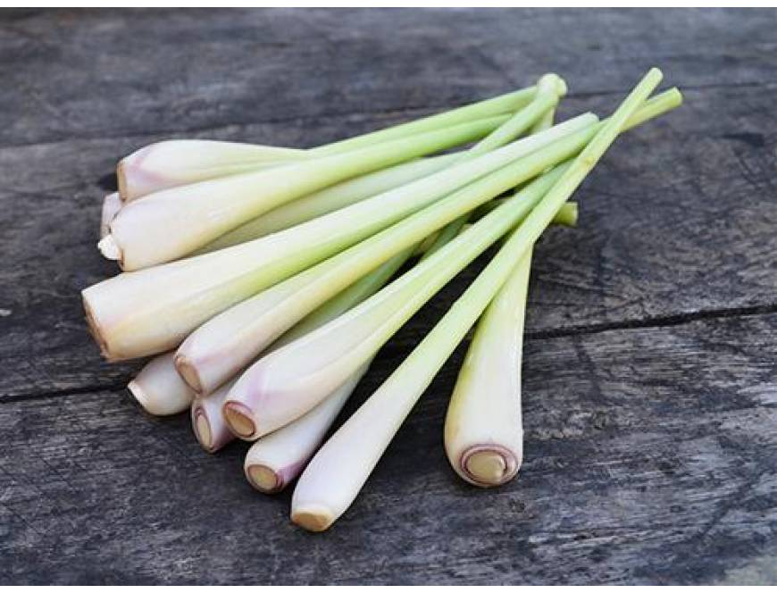

Tên khoa học: Cymbopogon.
Đặc điểm: Loài thảo mộc mọc thành bụi rậm đan xen, lá hẹp dài, mép lá nháp ráp hơi sắc. Củ và lá chứa lượng lớn tinh dầu với hương thơm chanh vô cùng thanh thoát.
Dùng thân củ đập dập đun nước xông cùng lá bưởi, tía tô. Có thể đập dập bỏ vào nước hãm như trà uống, hoặc ứng dụng cắt nhuyễn ướp với đồ ăn thay vì chỉ dùng trong chữa bệnh.
Quay lại Danh Mục